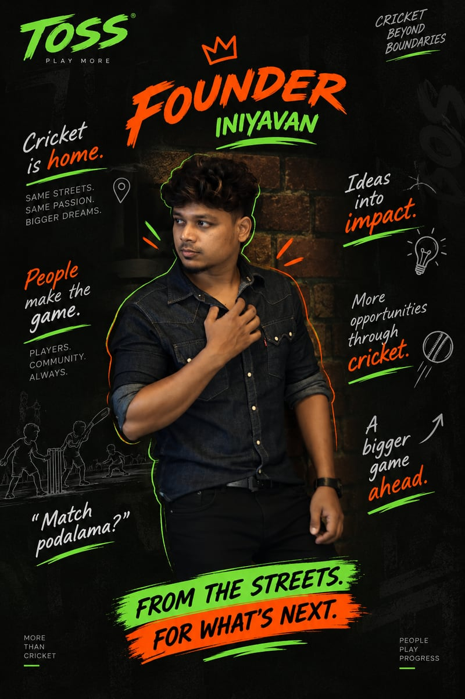
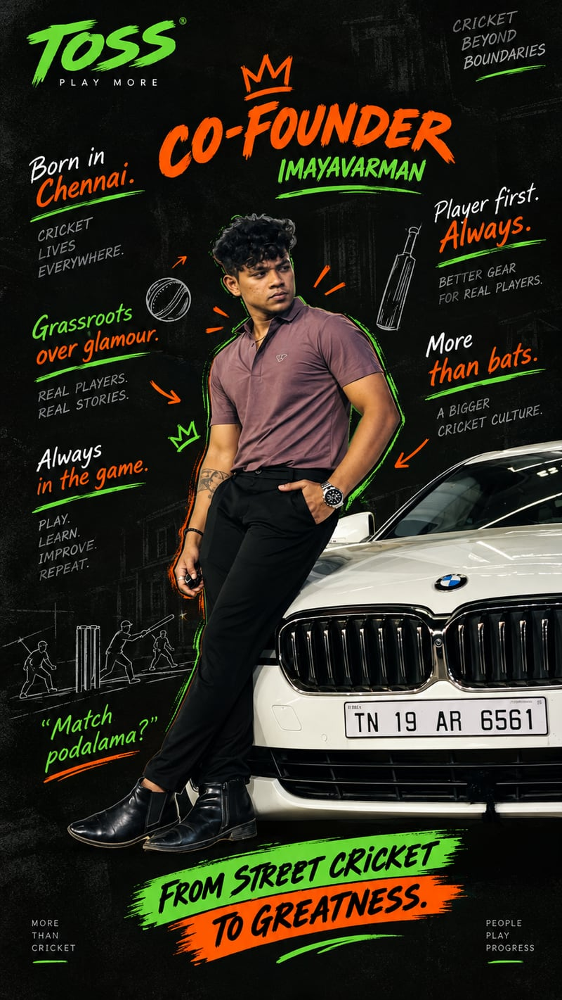

We didn't
start in
stadiums.
It started with a tennis ball, a bat that was probably too heavy, and someone shouting Match podalama? — the streets, the school grounds, the local turfs, the weekend tournaments. That is the cricket we grew up with, and the reason Toss exists.
- 2020Founded in Chennai
- 29Bats shaped by hand
- 36.9KPlayers on Instagram

01 Founder
Iniyavan
“Cricket is home.”
- 01People make the game
- 02Ideas into impact
- 03A bigger game ahead
Same streets, same passion, bigger dreams. More opportunities through cricket — and a bigger game ahead.

02 Co-Founder
Imayavarman
“Player first. Always.”
- 01Grassroots over glamour
- 02Always in the game
- 03More than bats
Born in Chennai, where cricket lives everywhere. Real players, real stories, better gear — and a bigger cricket culture behind it.
04 The question we ask a lot
What does
the player
actually want?
We have been playing cricket, buying bats, breaking bats and repairing bats our whole lives, and kept wondering why finding the right one had to be this complicated. We don't believe there is one perfect bat for everyone. We believe there is a better bat for every player — and we spend a ridiculous amount of time trying to find it.
- 01Lighter bat
- 02Better pickup
- 03The right profile
- 04The right price
- 05A custom weight
- 06Feels right in your hands
05 More than a bat
The bat was just the beginning. We don't want to sell you something and disappear — we want to be there before your match, during it, after it, and when you're looking for your next bat too.
- 01Bats
- 02Jerseys
- 03Accessories
- 04Customisation
- 05Repairs
- 06Stores
- 07Turfs
- 08Tournaments
- 09Content
- 10Community
06 Built with players, not just for them
They test our bats. They send us match videos. They tell us what to fix — and sometimes, exactly what to build next.
Our customers don't just buy from us. That is the best part of Toss: the people who play with it are the people building it.
07 From Chennai, for everyone who plays
Grassroots
is the whole
point.
- Coordinates
- 13.0333° N, 80.1833° E
- Workshop
- Nesapakkam, Ramapuram
- The turf
- Kolathur, Chennai
- Reach
- Across India, and further
Toss was born in a city where cricket isn't just a sport — it's a conversation, a competition, a reason to meet your friends. We started here.
08 Our bigger game
India's biggest
gully-cricket
brand.
Not just the brand that sells the bat — the brand people think of when they think gully cricket. You don't need a stadium to be a cricketer, and you don't need to be a professional to deserve a great bat. Every good player was once the one just starting out.
- 01Get your bat
- 02Fix it
- 03Customise it
- 04Get your jersey
- 05Play
- 06Compete
- 07Find your crew
09 This is Toss
Play more.
Play better.
Play together.
Born from the grassroots · Built around the player · Driven by the game